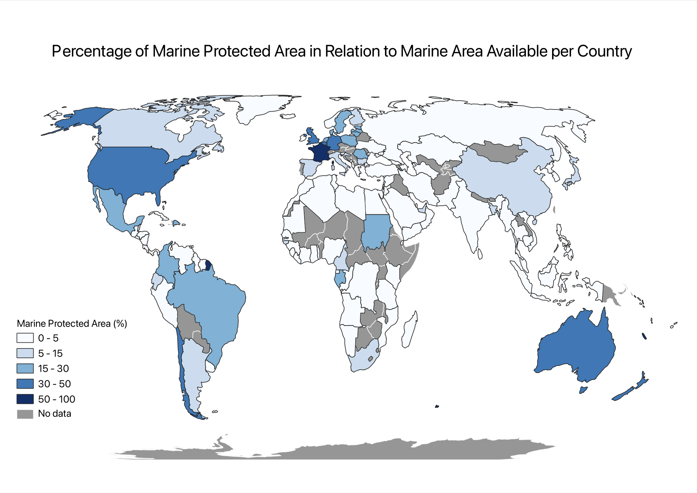

Choropleth Map
The map above is a choropleth map. A choropleth map is a map with a color of different shades which represents quantitative data – that is data that can be measured. The data is ordered through dark to light or vice versa, in this case the highest number is the darkest shade. The SDG indicator I picked looked at how much of a country’s marine areas are protected in relation to the marine area available to that country. This is represented in percentage, 100% being all a country’s marine areas are protected and 0% being none.
To make this map, I started by finding the data I wanted to represent. This was done through the data catalogue of the UN Sustainable Developmental Goals (SDG). I am most interested in SDG 14 (Life Below Water) where I found SDG 14.5.1 which as explained earlier, has data regarding how much of a country’s marine area is protected. I focused on the latest data which was from 2020. I then imported this data as a Shapefile to upload onto QGIS – a software used to create maps. Once the data was imported, I still had to import a different file to make a choropleth map as the UN puts a singular point in the center of a country rather than identifying the entire country. The new shapefile added had the name of the countries as well as their location, representing a map of the world. These two layers were then joined. This allowed for the points to be changed to shaded regions of the world map to create a choropleth map. This was done by changing the symbology and classifying the values within certain ranges. I chose to use the colour blue as we were discussing water. I then changed the ranges of the values for which each shade was used in order for the data to be easily readable by as wide of an audience as possible. Finally, I changed the projection for the map to be an equal area projection which is, the proportionate area of a country in relation to others on a map. This created the first map on QGIS. I then added this map to Esri Online with the same classifying values. I also added SDG 15.1.1 which looks at the amount of forested area in relation to the total area of each country. From these two layers, I added a slider as can be seen at the bottom of this page. This allows to compare the amount of forested areas (in green) and the amount of marine protected areas (in blue) per country.